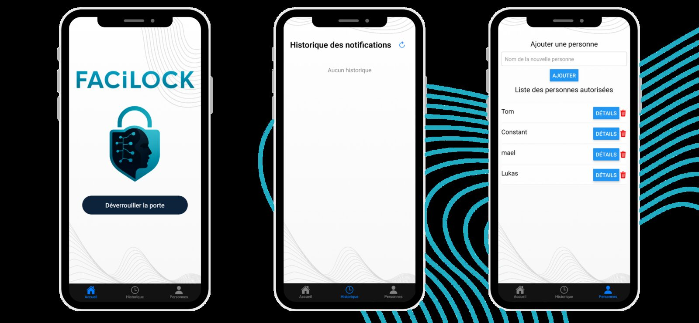

Projets / FaciLock
FaciLock
Une serrure qui s'ouvre au visage, au digicode ou depuis le téléphone.
- Type
- Projet de Terminale, Bac Pro Systèmes numériques, à trois
- Stack
- Python · Flask · OpenCV · Arduino · React Native
- Statut
- Juin 2025
- Code
- GitHub

Le projet
Projet de fin de Bac Pro, réalisé à trois en juin 2025. Tom Maudet s'est occupé du câblage et de la maquette physique. Maël Lecomte a travaillé sur l'application mobile. J'ai écrit le serveur sur le Raspberry Pi, le programme de l'Arduino, et le reste de l'application.
Ce que fait FaciLock
- Un appui sur le bouton allume la caméra quelques secondes ; le visage est comparé aux personnes autorisées.
- Visage reconnu : le relais coupe la ventouse, l'écran LCD affiche un message, la porte se reverrouille seule après quelques secondes.
- Visage inconnu : une courte vidéo du visiteur est enregistrée et une notification arrive sur le téléphone.
- Le digicode reste disponible comme seconde façon d'entrer.
- L'application mobile ouvre la porte à distance, montre les vidéos des visiteurs inconnus et gère les personnes autorisées (ajout de photos depuis le téléphone ou la caméra du Pi).

Les problèmes intéressants
Faire parler le Pi et l'Arduino. Le Raspberry Pi garde toute la logique ; l'Arduino
n'est qu'un périphérique. Ils échangent des commandes d'un caractère sur la liaison série : dans un sens
les touches du digicode, dans l'autre U pour « déverrouillé », N pour
« non reconnu », I pour « code incorrect »… L'Arduino affiche le message et joue le son
correspondant.
Afficher l'état du verrou en direct sur le téléphone. Plutôt que d'interroger le serveur en boucle, l'application garde une connexion ouverte (Server-Sent Events) et le serveur Flask lui envoie un évènement à chaque changement d'état.
Des vidéos lisibles sur téléphone. Les vidéos enregistrées par OpenCV ne se lisaient pas dans l'application. Elles sont réencodées avec ffmpeg en H.264, avec une piste audio vide et l'index en tête de fichier pour pouvoir commencer la lecture avant la fin du téléchargement.
ffmpeg -f lavfi -i anullsrc -i visiteur.mp4 -shortest \
-c:v libx264 -c:a aac -movflags +faststart sortie.mp4Ce que j'en retiens
Les trois choses qui m'ont pris du temps étaient toutes des problèmes de liaison : le protocole série entre le Pi et l'Arduino, les évènements envoyés au téléphone, et le format vidéo que l'application acceptait. Le code de chaque côté marchait avant ça.
C'est le seul projet de cette liste avec du matériel, et le seul fait en équipe.